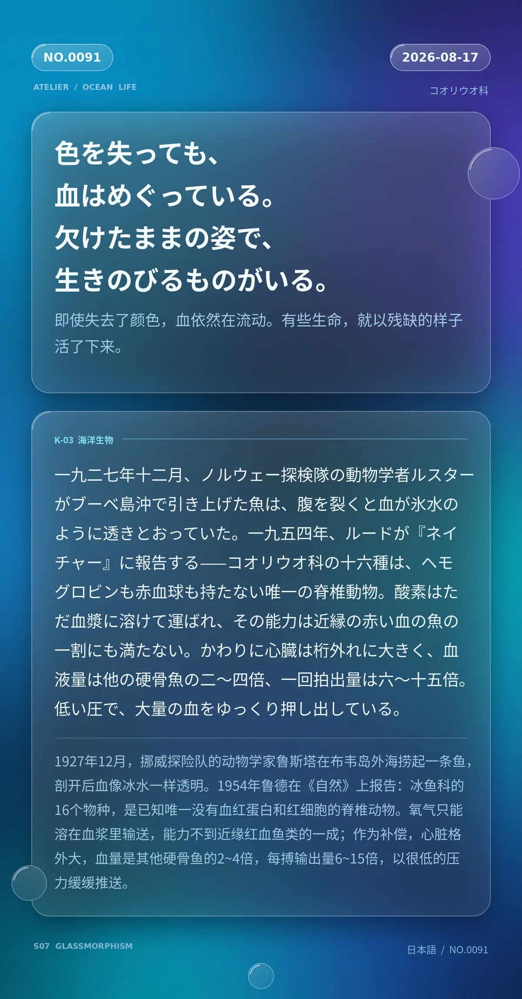

色を失っても、血はめぐっている。欠けたままの姿で、生きのびるものがいる。（即使失去了颜色，血依然在流动。有些生命，就以残缺的样子活了下来。）
一九二七年十二月、ノルウェーのノルヴェギア探検隊の動物学者ルスターがブーベ島沖で引き上げた魚は、腹を裂くと血が氷水のように透きとおっていた。一九五四年、ルードが『ネイチャー』に報告する——コオリウオ科の十六種は、ヘモグロビンも赤血球も持たない唯一の脊椎動物。酸素はただ血漿に溶けて運ばれ、その能力は近縁の赤い血の魚の一割にも満たない。かわりに心臓は桁外れに大きく、血液量は他の硬骨魚の二〜四倍、一回拍出量は六〜十五倍。低い圧で、大量の血をゆっくり押し出している。（1927年12月，挪威诺威吉亚探险队的动物学家鲁斯塔在布韦岛外海捞起一条鱼，剖开后血像冰水一样透明。1954年鲁德在《自然》上报告：冰鱼科的16个物种，是已知唯一没有血红蛋白和红细胞的脊椎动物。氧气只能溶在血浆里输送，能力不到近缘红血鱼类的一成；作为补偿，心脏格外大，血量是其他硬骨鱼的2~4倍，每搏输出量6~15倍，以很低的压力缓缓推送。）